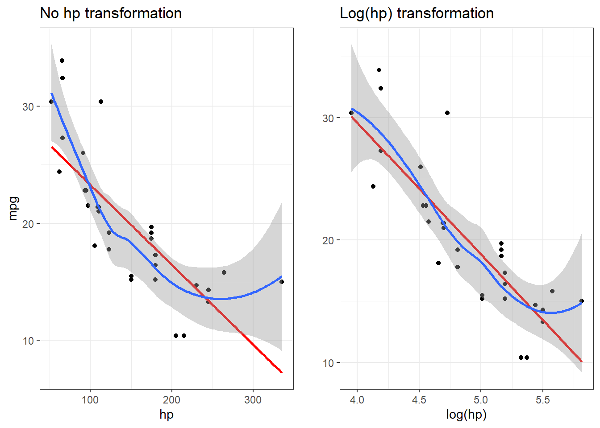

Cleaning and preprocessing data is an essential skill for data scientists. Luckily, tidymodels makes it easy and has become my go-to process for building robust and sustainable workflows.
My favorite advantage using this approach is that I can directly tie my preprocessing steps into my model. No more building and rebuilding preprocessing and modeling steps if you decide to change something on either end.
# librarieslibrary(tidymodels, quietly =TRUE, warn.conflicts =FALSE)# load data, covert row name to columndata <- mtcars |>rownames_to_column(var ='vehicle')knitr::kable(data |>sample_n(3))
vehicle
mpg
cyl
disp
hp
drat
wt
qsec
vs
am
gear
carb
Merc 240D
24.4
4
146.7
62
3.69
3.19
20.0
1
0
4
2
Maserati Bora
15.0
8
301.0
335
3.54
3.57
14.6
0
1
5
8
Ferrari Dino
19.7
6
145.0
175
3.62
2.77
15.5
0
1
5
6
Splitting Data
If you take one thing away from this post, it’ll likely be the these three functions. Splitting data (with built in methods for controlling breaks and strata) is simple with tidymodels.
# Set seed for replicationset.seed(1212022)# Put 3/4 of the data into the training set data_split <-initial_split(data, prop =3/4, strata = cyl)# Create data frames for the two sets:train_data <-training(data_split)test_data <-testing(data_split)
Some preprocessing steps require you to “fit” or “trained” on data before it can applied to new data. If you are familiar with sklearn.preprocessing functions in Python, then these concepts might confuse you in name only - the same process still applies. If your goal is to eventually use the recipe as a preprocessor in modeling, it is suggested that a workflow is used instead of manually estimating a recipe with prep().
Let’s build a basic recipe, that references a formula <mpg ~.>(predict mpg using all other features) and uses the training data.
basic_recipe <-recipe(mpg ~., data = train_data)
Recipes can be piped so that multiple step functions can be included. In fact, that’s a requirement for us here because I included the vehicle name as a feature. Let’s see what sort of functions we can apply.
The recipes package has a helpful set of methods for selecting variables within step functions. It uses dplyr like syntax, and helpers from the tidyselect package such as starts_with() or contains(). Additionally, you can select roles, or classes of variables.
Roles
While some roles set up during the formula process, roles can be manually altered as well. I’ll often use these functions to set up ID variables, which can be kept apart of the data, but ignored during modeling tasks. No more splitting and re-joining! Once a role is selected, you can select them in future function steps such as all_outcomes(), all_predictors(), or be even more specific with selections like all_integer_predictors().
# update variable 'vehicle' to be an id variable.basic_recipe <- basic_recipe |>update_role('vehicle',new_role ='id variable')summary(basic_recipe) |> knitr::kable()
variable
type
role
source
vehicle
string , unordered, nominal
id variable
original
cyl
double , numeric
predictor
original
disp
double , numeric
predictor
original
hp
double , numeric
predictor
original
drat
double , numeric
predictor
original
wt
double , numeric
predictor
original
qsec
double , numeric
predictor
original
vs
double , numeric
predictor
original
am
double , numeric
predictor
original
gear
double , numeric
predictor
original
carb
double , numeric
predictor
original
mpg
double , numeric
outcome
original
Imputation
Another powerful feature of the recipes package is the imputation tools. If our data has NAs (it doesn’t) we could impute them using methods such as mean, mode, bagged trees, KNN, linear model, or even assign categories to “unknown”.
Let’s induce some NAs and then see how well it works.
# randomly set 5 vehicle's hp to NAdata_missing <- datadata_missing$hp[sample(1:nrow(data), 5)] <-NA# checkdata_missing |>filter(is.na(hp)) |> knitr::kable()
vehicle
mpg
cyl
disp
hp
drat
wt
qsec
vs
am
gear
carb
Hornet Sportabout
18.7
8
360.0
NA
3.15
3.44
17.02
0
0
3
2
Merc 280
19.2
6
167.6
NA
3.92
3.44
18.30
1
0
4
4
Cadillac Fleetwood
10.4
8
472.0
NA
2.93
5.25
17.98
0
0
3
4
Fiat 128
32.4
4
78.7
NA
4.08
2.20
19.47
1
1
4
1
Ferrari Dino
19.7
6
145.0
NA
3.62
2.77
15.50
0
1
5
6
# create, imputation recipe and add imputation step function imputed_recipe <-recipe(mpg ~., data = train_data) |>update_role('vehicle',new_role ='id variable') |>step_impute_linear(hp, impute_with =imp_vars(cyl,disp))# fit recipeimputed_fit <- imputed_recipe |>prep(data_missing)imputed_fit |>print()
Recipe
Inputs:
role #variables
id variable 1
outcome 1
predictor 10
Training data contained 32 data points and 5 incomplete rows.
Operations:
Linear regression imputation for hp [trained]
Individual transformations can be performed, and are especially helpful for certain models that require certain assumptions to hold. For example, sometimes it’d be nice to transform a non-normal distribution into a normal distribution, enter the step_YeoJohnson() function. Other times, there are non-linear relationships that should be adjusted, especially if the model selected expects them to be.
library(cowplot)p1 <-ggplot(data, aes(x=hp, y = mpg)) +geom_point() +geom_smooth(method ='lm', formula =y ~ x,color='red',se =FALSE) +geom_smooth(method ='loess', formula =y ~ x) +theme_bw() +labs(title ='No hp transformation')p2 <-ggplot(data, aes(x=log(hp), y = mpg)) +geom_point() +geom_smooth(method ='lm', formula =y ~ x,color='red',se =FALSE) +geom_smooth(method ='loess', formula =y ~ x) +theme_bw() +labs(title ='Log(hp) transformation',y='')plot_grid(p1, p2)

# add log step to basic recipebasic_recipe <- basic_recipe |>step_log(hp)
Transformations of variables should be carefully considered, intentionally selected, and properly evaluated. Some methods (linear regression, PCA) require closer attention to the inputs than, say XGBoost. Quick note, normalization is covered below.
Discretization
You can transform continuous variables into discrete variables with these step functions. That said, you really need to have a good reason for doing this to predicting variables. Here are just a few problems caused by categorizing continuous variables. If you insist on continuing, check out step_discretize() and step_cut().
Dummy Variables and Encoding
Probably the most commonly used functions from this set are step_dummy() and step_date() or step_holiday() for working with time series data. Creating dummy variables explicitly before passing the data into a model gives you additional control and also sets names that are easier to interpret, set one_hot=TRUE to make sure every category gets encoded.
# There are three cylinder sizes in the datasetdata$cyl |>unique() |>sort()
[1] 4 6 8
Without one-hot encoding
dummies_recipe <-recipe(mpg ~., data = train_data) |>update_role('vehicle',new_role ='id variable') |>step_mutate(cyl =as.factor(cyl)) |>#individual transformation: numeric -> factorstep_dummy(cyl) |># new dummy stepprep(train_data) # fit# apply the recipe to the datadummies_data <-bake(dummies_recipe, new_data=NULL) dummies_data |>select(starts_with('cyl')) |>names()
[1] "cyl_X6" "cyl_X8"
With one-hot encoding
dummies_recipe <-recipe(mpg ~., data = train_data) |>update_role('vehicle',new_role ='id variable') |>step_mutate(cyl =as.factor(cyl)) |>#individual transformation: numeric -> factorstep_dummy(cyl, one_hot =TRUE) |># new dummy step with one hotprep(train_data) # fit# apply the recipe to the datadummies_data <-bake(dummies_recipe, new_data=NULL) dummies_data |>select(starts_with('cyl')) |>names()
[1] "cyl_X4" "cyl_X6" "cyl_X8"
Interactions
step_interact() creates an interaction between variables. It is primarily intended for numeric data, or categorical data that has been converted to a dummy step.
interact_recipe <-recipe(mpg ~., data = data) |>update_role('vehicle',new_role ='id variable') |># create interaction between weight and horsepowerstep_interact(terms =~ hp:wt) |>prep(data)interact_data <-bake(interact_recipe,new_data =NULL)interact_data |>select(hp,wt,hp_x_wt) |>head(3) |> knitr::kable()
hp
wt
hp_x_wt
110
2.620
288.20
110
2.875
316.25
93
2.320
215.76
Normalization
Normalization step functions are probably the most commonly used and are often necessary for accurate modeling when using methods like PCA or regularized regression such as LASSO.
normalize_recipe <-recipe(mpg ~., data = data) |>update_role('vehicle',new_role ='id variable') |>step_mutate(cyl =as.factor(cyl)) |># select the vars you want, or just grap all the numeric ones.step_normalize(all_numeric_predictors()) |>prep(data)normalize_data <-bake(normalize_recipe, new_data =NULL)# notice that it skips the cyl (factor) and mpg (outcome) columns!normalize_data |>select(vehicle,cyl, disp,hp,mpg) |>head(3) |> knitr::kable()
vehicle
cyl
disp
hp
mpg
Mazda RX4
6
-0.5706198
-0.5350928
21.0
Mazda RX4 Wag
6
-0.5706198
-0.5350928
21.0
Datsun 710
4
-0.9901821
-0.7830405
22.8
Multivariate Transformations
Many different multivariate transformations are available, from geospatial distance functions to kernel PCA functions. Even one of my favorite algorithms, step_isomap(), is available!
Here’s and example using step_pca(). This format is so easy, I often prefer it to more specialized packages when performing EDA or dimensional reduction.
pca_recipe <-recipe(mpg ~hp+wt+cyl+drat+qsec+vehicle, data = data) |># include vehicle in formula, but then set as ID to keep it.update_role('vehicle', new_role ='id variable') |>step_mutate(cyl =as.factor(cyl)) |>step_normalize(all_numeric_predictors()) |># necessary for PCA!step_pca(all_numeric_predictors(),num_comp =2) |># PCA, keep the top 2 componentsprep(data)pca_data <-bake(pca_recipe, new_data =NULL)# cylinders is not included in the PCA because it is a factor# mpg is not included because it is an outcome.pca_data |>head(3) |> knitr::kable()
cyl
vehicle
mpg
PC1
PC2
6
Mazda RX4
21.0
-0.6150518
-0.9200350
6
Mazda RX4 Wag
21.0
-0.5925301
-0.5983580
4
Datsun 710
22.8
-1.3388038
-0.0468172
Filters
Filter step functions are a great way to ‘automate’ your modeling workflow - that is, to place all your preprocessing steps within your recipe. Want to remove pesky columns that have near-zero variance? step_nzv() does that. Want to control for highly correlated columns? step_corr() is here to help. There are many different filters to choose from here, all are useful for ensuring your workflow can handle different scenarios.
# create missing datadata_missing <- data# randomly set 5 vehicle's hp to NAdata_missing$hp[sample(1:nrow(data), 5)] <-NA# randomly set 10 vehicle's wt to NAdata_missing$wt[sample(1:nrow(data), 10)] <-NA#checkdata_missing |>filter(is.na(hp) |is.na(wt)) |>head(3) |> knitr::kable()
vehicle
mpg
cyl
disp
hp
drat
wt
qsec
vs
am
gear
carb
Valiant
18.1
6
225.0
105
2.76
NA
20.22
1
0
3
1
Merc 240D
24.4
4
146.7
62
3.69
NA
20.00
1
0
4
2
Merc 230
22.8
4
140.8
95
3.92
NA
22.90
1
0
4
2
filter_recipe <-recipe(mpg ~hp+wt+cyl+vehicle, data = data_missing) |># include vehicle in formula, but then set as ID to keep it.update_role('vehicle', new_role ='id variable') |>step_mutate(cyl =as.factor(cyl)) |># remove columns with more than 20% missing valuesstep_filter_missing(all_predictors(),threshold=.2) |>prep(data_missing)# wt is removed (exceeds threshold), while hp is notfilter_recipe |>print()
Recipe
Inputs:
role #variables
id variable 1
outcome 1
predictor 3
Training data contained 32 data points and 11 incomplete rows.
Operations:
Variable mutation for ~as.factor(cyl) [trained]
Missing value column filter removed wt [trained]
Row Operations
Row operations are mostly extensions from dplyr with functions such as step_filter() and step_naomit(). Again, the goal is to build the typical preparation and cleaning operations into your workflow. Expect a common input format - then make it useful/understandable.
Other Step Functions
There are a few miscellaneous step functions that doesn’t fall within the normal in the organization structure set up in. A particularly useful one is step_rename() for dplyr-like renaming and step_window() for window functions.
Check Functions
Check functions are useful for identifying issues before progressing to more intensive steps. If the check fails, it will break the bake function and give an error.
# reuse missing data.. as expected, gives error.check_recipe <-recipe(mpg ~hp+wt+cyl+vehicle, data = data_missing) |># include vehicle in formula, but then set as ID to keep it.update_role('vehicle', new_role ='id variable') |>step_mutate(cyl =as.factor(cyl)) |># create error if there are any missing values in the predicting valuescheck_missing(all_predictors()) |>prep(data_missing)
Error in `bake()`:
! The following columns contain missing values: `hp`, `wt`.
Internal Step Handling
Finally, there are a few functions that help manage the naming of variables, adding steps or checks, and inspecting recipes. Two ones that I use to debug are detect_step() and fully_trained().
internal_recipe <-recipe(mpg ~hp+wt+cyl+vehicle, data = data) |>update_role('vehicle', new_role ='id variable') |>step_mutate(cyl =as.factor(cyl)) |>step_BoxCox(all_numeric())# is the recipe trained/fit? falseinternal_recipe |>fully_trained()
[1] FALSE
# ok, train itinternal_recipe <- internal_recipe |>prep(data)# is the recipe fit? true!internal_recipe |>fully_trained()
[1] TRUE
# did the recipe use step_Yeo_Johnson? falseinternal_recipe |>detect_step('YeoJohnson')
[1] FALSE
# did it use step_BoxCox? trueinternal_recipe |>detect_step('BoxCox')
[1] TRUE
Creating a Workflow
Let’s put a entire workflow together and build a small model. But before we do that using a workflow, I want to demonstrate the advantages of a workflow that integrates a the preprocessing steps vs. the typical approach of preprocessing the data first, then passing it to a model.
# Set seed for replicationset.seed(1212022)# Put 3/4 of the data into the training set data_split <-initial_split(data, prop =3/4, strata = cyl)# Create data frames for the two sets:train_data <-training(data_split)test_data <-testing(data_split)# set up final recipefinal_recipe <-recipe(mpg~.,data = train_data) |># set some of the variables to update_role(vehicle,am,vs,gear,qsec, new_role ='id variable') |># set cyl as factorstep_mutate(cyl =as.factor(cyl)) |># dummy step cylstep_dummy(cyl, one_hot =TRUE) |># take log of hpstep_log(hp)# check recipefinal_recipe |>print()
Recipe
Inputs:
role #variables
id variable 5
outcome 1
predictor 6
Operations:
Variable mutation for as.factor(cyl)
Dummy variables from cyl
Log transformation on hp
First, let’s show why using a workflow is preferred to manually using prep.
# set model enginelm_model <-linear_reg() |>set_engine('lm')
Normally, we’d preprocess the data and then pass it into the model training. However… this doesn’t work very well when we’re using more complicated preprocessing recipes. Notice that the model isn’t using the formula and roles used in the data, it’s just using the preprocessed data, not exactly what we intended.
# prep the data data_prepped <-prep(final_recipe, train_data)# fit the modellinear_reg_fit <-fit(lm_model,mpg~.,data =juice(data_prepped))# wait. oh no.linear_reg_fit
parsnip model object
Call:
stats::lm(formula = mpg ~ ., data = data)
Coefficients:
(Intercept) vehicleCadillac Fleetwood
1.52e+01 -4.80e+00
vehicleCamaro Z28 vehicleChrysler Imperial
-1.90e+00 -5.00e-01
vehicleDatsun 710 vehicleDodge Challenger
7.60e+00 3.00e-01
vehicleDuster 360 vehicleFiat 128
-9.00e-01 1.72e+01
vehicleFiat X1-9 vehicleHornet 4 Drive
1.21e+01 6.20e+00
vehicleHornet Sportabout vehicleLincoln Continental
3.50e+00 -4.80e+00
vehicleLotus Europa vehicleMazda RX4 Wag
1.52e+01 5.80e+00
vehicleMerc 230 vehicleMerc 280
7.60e+00 4.00e+00
vehicleMerc 280C vehicleMerc 450SL
2.60e+00 2.10e+00
vehicleMerc 450SLC vehiclePorsche 914-2
9.73e-16 1.08e+01
vehicleToyota Corona vehicleValiant
6.30e+00 2.90e+00
vehicleVolvo 142E disp
6.20e+00 NA
hp drat
NA NA
wt qsec
NA NA
vs am
NA NA
gear carb
NA NA
cyl_X4 cyl_X6
NA NA
cyl_X8
NA
To fix this, we need to carefully monitor both our preprocessing steps and our model inputs… or we could just feed our preprocessing steps directly into our model and let that dictate what it should do (much easier).
We’d like the recipe to seamlessly feed into the model. To do that, we need a workflow with a our recipe and a model.
# set up final recipefinal_recipe <-recipe(mpg~.,data = train_data) |># set some of the variables to update_role(vehicle,am,vs,gear,qsec,drat, new_role ='id variable') |># set cyl as factorstep_mutate(cyl =as.factor(cyl)) |># dummy step cylstep_dummy(cyl, one_hot =TRUE) |># take log of hpstep_log(hp)# set model enginelm_model <-linear_reg() |>set_engine('lm')# create workflow objectexample_workflow <-workflow() |># add recipeadd_recipe(final_recipe) |># add modeladd_model(lm_model)# prepare the recipe and estimate the model in a single callexample_workflow_fit <-fit(example_workflow, data = train_data)# print modelexample_workflow_fit
Once you get the hang of recipes and building simple workflows, it’s a small step into resampling, parameter optimization, and improved model evaluation - all within the tidymodels framework.